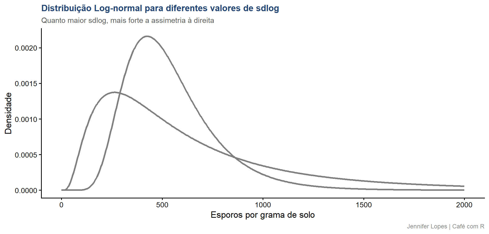
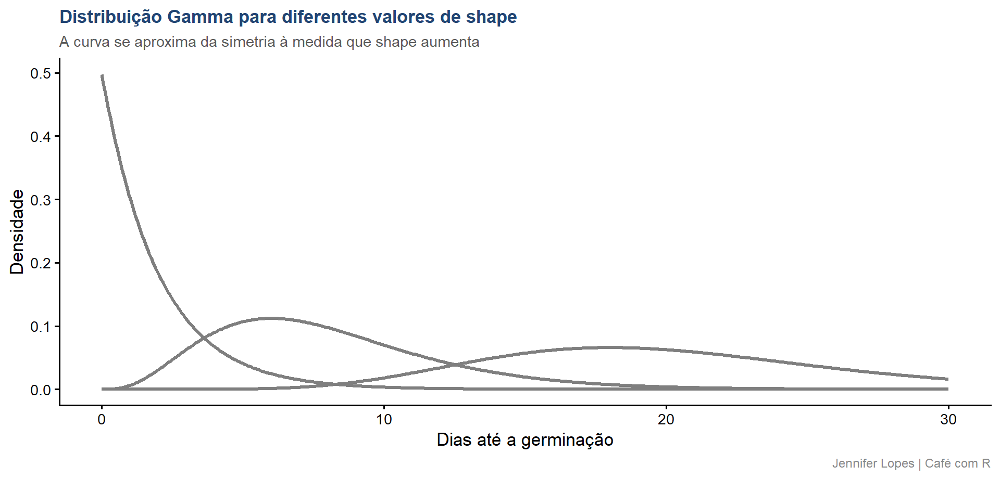
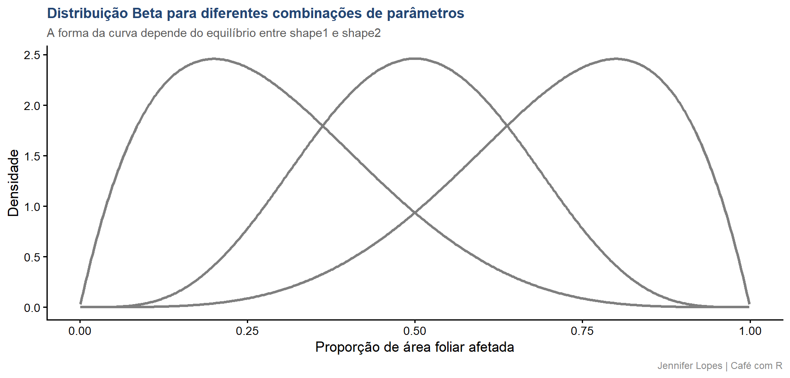

Aula 54. Distribuições Contínuas
Normal, Log-normal, Gamma e Beta, e como escolher o modelo certo
Acompanhe o Café com R
Que cada gole desperte uma nova ideia.
Que cada script abra uma nova conversa.
Que o Café com R se torne um ponto de encontro nosso.
SITE OFICIAL > https://jenniferlopes.github.io/meu_site/
Objetivos da aula
- Recapitular a distribuição Normal e seu papel de referência
- Definir a distribuição Log-normal e reconhecer processos multiplicativos
- Definir a distribuição Gamma e reconhecer variáveis de tempo de espera
- Definir a distribuição Beta e reconhecer variáveis limitadas entre 0 e 1
- Escolher corretamente entre as quatro distribuições contínuas diante de um conjunto de dados novo
Bloco Incial
Variáveis Aleatórias Contínuas
O que é uma variável aleatória contínua
Uma variável aleatória é contínua quando pode assumir qualquer valor dentro de um intervalo, resultado de medição, não de contagem.
Altura de planta, tempo até a germinação e proporção de área foliar afetada são todos exemplos de variáveis contínuas, mas com domínios e formas de distribuição muito diferentes entre si.
A distribuição de uma variável contínua é descrita por uma função de densidade de probabilidade, em que a área sob a curva, e não a altura em um ponto, representa probabilidade.
Bloco 1
Distribuição Normal, Recapitulando
Recapitulando o essencial
\[f(x) = \frac{1}{\sigma\sqrt{2\pi}}\exp\left(-\frac{(x-\mu)^2}{2\sigma^2}\right)\]
Simétrica em torno de \(\mu\), domínio em toda a reta real, média igual a mediana igual a moda.
É o modelo de referência para variáveis contínuas resultantes da soma de muitos fatores independentes de pequena magnitude, e a base do Teorema Central do Limite.
Não é adequada para variáveis estritamente positivas com assimetria forte, nem para variáveis limitadas a um intervalo fechado, como veremos nos próximos blocos.
Quando aparece na prática
- Contexto: a altura de plantas em um estande homogêneo tende a se distribuir de forma aproximadamente simétrica, resultado de muitos fatores genéticos e ambientais atuando em conjunto.
Código: aplicação à altura de planta
Output: aplicação e interpretação
# A tibble: 1 × 3
media mediana assimetria
<dbl> <dbl> <dbl>
1 164. 163. -0.026- Média e mediana praticamente coincidem, e a assimetria está próxima de zero, consistente com a suposição de normalidade para a altura de planta neste estande.
Bloco 2
Distribuição Log-normal
Conceito, processos multiplicativos
Uma variável \(X\) segue distribuição Log-normal quando \(\ln(X)\) segue distribuição Normal.
Surge naturalmente de processos multiplicativos, em que o valor final resulta do produto de muitos fatores aleatórios independentes, e não de sua soma.
Contexto: a concentração de esporos de um fungo por grama de solo resulta de sucessivos ciclos de multiplicação do patógeno, um processo multiplicativo típico, produzindo forte assimetria à direita.
Função de densidade e propriedades na escala original
\[f(x) = \frac{1}{x\,\sigma\sqrt{2\pi}}\exp\left(-\frac{(\ln x - \mu)^2}{2\sigma^2}\right), \quad x > 0\]
| Propriedade, escala original | Fórmula |
|---|---|
| Média | \(E[X] = \exp(\mu + \sigma^2/2)\) |
| Variância | \(\text{Var}(X) = \left[\exp(\sigma^2)-1\right]\exp(2\mu+\sigma^2)\) |
Important
Atenção: \(\mu\) e \(\sigma\) são a média e o desvio padrão de \(\ln(X)\), não da variável original. Reportar \(\mu\) como se fosse a média de \(X\) é um erro comum de interpretação.
Código: curvas log-normais para parâmetros diferentes
Gráfico: curvas log-normais

Quando aparece na prática
- Concentrações microbianas, população de pragas em explosão populacional, e outras variáveis resultantes de crescimento multiplicativo, tendem a seguir distribuição Log-normal, com forte assimetria à direita na escala original.
Código: aplicação aos dados de esporos
Output: aplicação e interpretação
# A tibble: 1 × 4
media_original mediana_original media_log dp_log
<dbl> <dbl> <dbl> <dbl>
1 761. 538. 6.27 0.85- A média na escala original é substancialmente maior que a mediana, assinatura característica da assimetria log-normal. Na escala logarítmica, a distribuição se aproxima da normalidade, confirmando o processo multiplicativo subjacente.
Bloco 3
Distribuição Gamma
Conceito, tempo de espera até um evento
A distribuição Gamma modela o tempo, ou outra grandeza contínua estritamente positiva, necessário para que ocorra um determinado número de eventos em um processo de taxa constante.
Contexto: o número de dias até a germinação de uma semente é uma variável estritamente positiva, tipicamente assimétrica à direita, adequada ao modelo Gamma.
Função de densidade e parâmetros
\[f(x) = \frac{\beta^\alpha}{\Gamma(\alpha)}x^{\alpha-1}e^{-\beta x}, \quad x > 0\]
| Símbolo | Significado |
|---|---|
| \(\alpha\) | Parâmetro de forma (shape) |
| \(\beta\) | Parâmetro de taxa (rate) |
| \(E[X] = \alpha/\beta\) | Média |
| \(\text{Var}(X) = \alpha/\beta^2\) | Variância |
- Quando \(\alpha = 1\), a Gamma se reduz à distribuição Exponencial, o caso mais simples de tempo de espera, com taxa de ocorrência constante ao longo do tempo.
Código: curvas gamma para diferentes shape
x_seq <- seq(0.01, 30, length.out = 500)
curvas_gamma <- bind_rows(
tibble(x = x_seq, y = dgamma(x_seq, shape = 1, rate = 0.5), rotulo = "shape = 1"),
tibble(x = x_seq, y = dgamma(x_seq, shape = 4, rate = 0.5), rotulo = "shape = 4"),
tibble(x = x_seq, y = dgamma(x_seq, shape = 10, rate = 0.5), rotulo = "shape = 10"))Gráfico: curvas gamma

Quando aparece na prática
- Tempo até germinação, tempo até a eclosão de ovos de uma praga, ou tempo até a manifestação de sintomas de uma doença, são exemplos típicos de variáveis de tempo de espera, adequadas à distribuição Gamma.
Código: aplicação aos dados de germinação
Output: aplicação e interpretação
# A tibble: 1 × 4
media variancia shape_estimado rate_estimado
<dbl> <dbl> <dbl> <dbl>
1 8.20 11.6 5.80 0.708- Os parâmetros de forma e taxa estimados pelo método dos momentos são próximos dos valores usados na simulação, confirmando que a distribuição Gamma descreve adequadamente o tempo até a germinação nesta amostra.
Bloco 4
Distribuição Beta
Conceito, variável limitada entre 0 e 1
A distribuição Beta modela variáveis contínuas restritas ao intervalo entre 0 e 1, como proporções, taxas e probabilidades.
Contexto: a proporção de área foliar afetada por uma doença, em cada folha avaliada, está necessariamente entre 0 e 1, um domínio que a distribuição Normal não respeita.
Função de densidade, parâmetros e formas possíveis
\[f(x) = \frac{\Gamma(\alpha+\beta)}{\Gamma(\alpha)\Gamma(\beta)}x^{\alpha-1}(1-x)^{\beta-1}, \quad 0 < x < 1\]
| Combinação | Forma resultante |
|---|---|
| \(\alpha = \beta = 1\) | Uniforme entre 0 e 1 |
| \(\alpha < \beta\) | Assimetria à direita, concentração em valores baixos |
| \(\alpha > \beta\) | Assimetria à esquerda, concentração em valores altos |
| \(\alpha = \beta > 1\) | Simétrica, concentrada no centro |
Código: curvas beta para diferentes parâmetros
x_seq <- seq(0.001, 0.999, length.out = 500)
curvas_beta <- bind_rows(
tibble(x = x_seq, y = dbeta(x_seq, shape1 = 2, shape2 = 5), rotulo = "shape1 = 2, shape2 = 5"),
tibble(x = x_seq, y = dbeta(x_seq, shape1 = 5, shape2 = 2), rotulo = "shape1 = 5, shape2 = 2"),
tibble(x = x_seq, y = dbeta(x_seq, shape1 = 5, shape2 = 5), rotulo = "shape1 = 5, shape2 = 5"))Gráfico: curvas beta

Quando aparece na prática
- Severidade de doença como proporção de área afetada, taxa de germinação de um lote, proporção de cobertura de solo por plantas daninhas, todas essas variáveis estão limitadas entre 0 e 1 e são candidatas naturais à distribuição Beta.
Código: aplicação aos dados de severidade
Output: aplicação e interpretação
# A tibble: 1 × 4
media variancia shape1_estimado shape2_estimado
<dbl> <dbl> <dbl> <dbl>
1 0.289 0.029 1.78 4.39- Os parâmetros estimados pelo método dos momentos indicam shape1 menor que shape2, coerente com a concentração da severidade em valores baixos observada nesta amostra, a maioria das folhas apresenta pouca área afetada.
Bloco 5
Escolhendo o Modelo Certo
Árvore de decisão
| Pergunta | Resposta | Distribuição indicada |
|---|---|---|
| A variável é simétrica e pode assumir qualquer valor real? | Sim | Normal |
| A variável é estritamente positiva, resulta de processo multiplicativo, com forte assimetria à direita? | Sim | Log-normal |
| A variável representa tempo de espera até um evento, estritamente positiva? | Sim | Gamma |
| A variável está limitada entre 0 e 1, como uma proporção? | Sim | Beta |
Erro comum 1, usar Normal para variável estritamente positiva e assimétrica
- Ajustar um modelo Normal a uma variável como concentração de esporos ou tempo até germinação ignora tanto a restrição de positividade quanto a assimetria observada, produzindo previsões que podem incluir valores negativos, fisicamente impossíveis.
Erro comum 2, usar Normal para proporção limitada entre 0 e 1
- Modelar uma proporção, como severidade de doença, com distribuição Normal permite que o modelo produza valores fora do intervalo entre 0 e 1, uma inconsistência que a distribuição Beta, por construção, não permite.
Resumo: distribuições contínuas
| Distribuição | Domínio | Parâmetros | Função no R |
|---|---|---|---|
| Normal | Reta real | \(\mu\), \(\sigma^2\) | dnorm() |
| Log-normal | Positivo | \(\mu\), \(\sigma\) da escala log | dlnorm() |
| Gamma | Positivo | \(\alpha\) (shape), \(\beta\) (rate) | dgamma() |
| Beta | Entre 0 e 1 | \(\alpha\), \(\beta\) | dbeta() |
Obrigada!

Continue praticando e explorando.
Esta aula é parte do projeto Café com R. É open source. Use, compartilhe e adapte.
Siga o Café com R
Que cada gole desperte uma nova ideia.
Que cada script abra uma nova conversa.
Que o Café com R se torne um ponto de encontro nosso.
SITE OFICIAL > https://jenniferlopes.github.io/meu_site/

Jennifer Lopes | Café com R